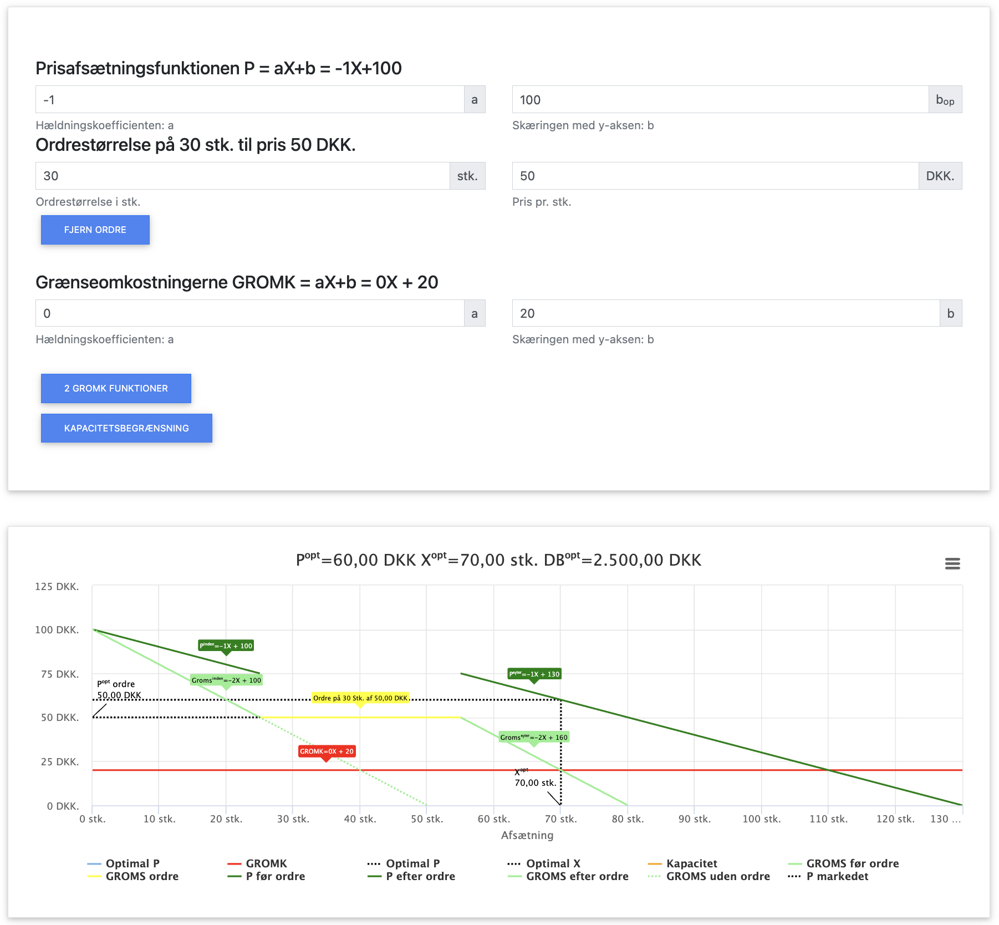
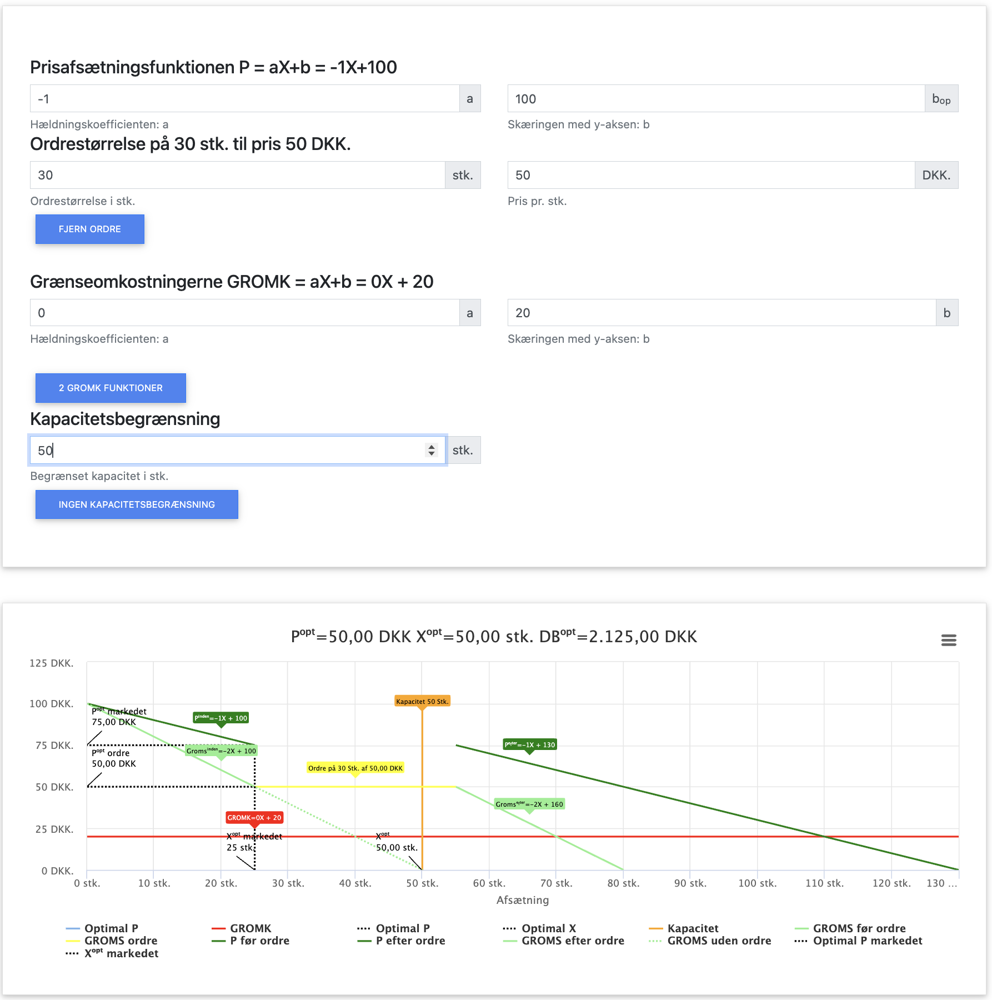

Optimering mellem Marked og Ordre

Mange virksomheder opererer i markeder, hvor de har mulighed for at afsætte deres produkter på forskellige måder - typisk både på et almindeligt marked (med faldende pris) og gennem faste ordrer til en fast pris. Dette skaber mulighed for prisdifferentiering og mere kompleks optimering.
I dette kapitel benytter vi følgende forkortelser:
- P = Pris på marked
- Po = Pris på ordre
- X = Mængde på marked
- Xo = Mængde på ordre
- Xmax = Maksimal ordremængde
- Xtotal = Total produceret mængde (X + Xo)
- OMS = Omsætning (P × X + Po × Xo)
- VO = Variable omkostninger (VE × Xtotal)
- FO = Faste omkostninger
- VE = Variable enhedsomkostninger (VO / Xtotal)
- GROMS = Grænseomsætning på marked (ændring i markedsomsætning ved ændring i X)
- GROMK = Grænseomkostninger (ændring i totale omkostninger ved ændring i Xtotal)
- DB = Dækningsbidrag (OMS - VO)
- TO = Totale omkostninger (FO + VO)
I dette kapitel fokuserer vi på:
- Hvordan virksomheder kan optimere produktion og afsætning mellem marked og ordre
- Prisdifferentiering og dens betydning for maksimering af profit
- Optimering under forskellige betingelser for ordrer
- To gennemgående beregningseksempler med begrænsede og ubegrænsede ordrer
Grundlæggende principper for optimering med ordre og marked
Når en virksomhed kan afsætte både på et marked med faldende pris og gennem faste ordrer, gælder følgende principper:
- Produktion allokeres først til den afsætningskanal, der giver højest grænseomsætning
- Hvis ordreprisen (Po) er højere end markedets grænseomsætning (GROMS), fyldes ordren først
- Hvis ordreprisen (Po) er lavere end markedets pris (P) men højere end GROMS ved en vis mængde, kan det betale sig at afsætte både på markedet og gennem ordrer
- Optimal allokering opnås når GROMS = Po = GROMK (hvis ordren ikke er fyldt op)
- Hvis ordrekapaciteten (Xmax) er fyldt, optimeres markedssalget, så GROMS = GROMK
Prisdifferentiering og afsætningsstrategi
Prisdifferentiering giver virksomheden mulighed for at udnytte forskellige kundesegmenters betalingsvillighed. Dette kan være gennem:
- Ordre til fast pris: Stabil afsætning til en forudbestemt pris
- Markedssalg med faldende pris: Fleksibel afsætning hvor prisen falder ved øget mængde
Den optimale strategi afhænger af forholdet mellem ordreprisen (Po) og markedspris/grænseomsætning (P/GROMS):
- Hvis Po > P, bør virksomheden prioritere ordresalg
- Hvis P > Po > GROMS, bør virksomheden sælge både på marked og ordre
- Hvis GROMS > Po, bør virksomheden prioritere markedssalg
Gennemgående beregningseksempel: Begrænset ordremængde
Lad os se på et konkret eksempel, hvor en virksomhed kan sælge både på et almindeligt marked og gennem en ordre med begrænset mængde:
Forudsætninger:
- Efterspørgselsfunktion på marked: P = -2X + 400
- Ordrepris: Po = 80 kr. (fast pris uanset mængde)
- Maksimal ordremængde: Xmax = 20 enheder
- Faste omkostninger (FO) = 1.500 kr.
- Variable enhedsomkostninger (VE) = 40 kr. pr. enhed (konstant)
 Figur 10.1: Efterspørgselsfunktion på markedet og ordre beregnet i appen.
App beregning afsætning på 2 markeder.
Trin 1: Analyse af indtjening på ordre vs. marked
Først sammenligner vi om det er mere profitabelt at sælge på markedet eller gennem ordre.
Analyse:
Vi beregner først grænseomsætningen på markedet:
Omsætning på marked: OMSmarked = P × X = (-2X + 400) × X = -2X² + 400X
GROMS = den afledte af OMSmarked med hensyn til X = -4X + 400
Ved X = 0 (startpunkt) er GROMS = 400 kr., hvilket er betydeligt højere end ordreprisen på 80 kr.
Dette betyder, at virksomheden først bør sælge på markedet, indtil GROMS falder til samme niveau som Po.
Vi finder den mængde, hvor GROMS = Po:
-4X + 400 = 80
-4X = -320
X = 80 enheder
Ved X = 80 enheder vil prisen på markedet være:
P = -2X + 400 = -2 × 80 + 400 = -160 + 400 = 240 kr.
Da P (240 kr.) > Po (80 kr.) = GROMS (80 kr.), bør virksomheden:
- Sælge 80 enheder på markedet til 240 kr. pr. enhed
- Derefter opfylde ordren på 20 enheder til 80 kr. pr. enhed
Trin 2: Beregning af grænseomkostningerne
Da vi har konstante variable enhedsomkostninger (VE = 40), er GROMK = VE = 40 kr.
Trin 3: Tjek om samlet løsning er optimal
Analyse:
For at optimeringsreglen skal være opfyldt, skal GROMS = GROMK. Vi har:
GROMS ved X = 80: -4 × 80 + 400 = -320 + 400 = 80 kr.
GROMK ved X = 80: 2 × 80 + 40 = 160 + 40 = 200 kr.
Da GROMS (80 kr.) < GROMK (200 kr.), er vi faktisk over den optimale produktionsmængde for markedet. Vi finder den korrekte optimale mængde:
-4X + 400 = 2X + 40
-4X - 2X = 40 - 400
-6X = -360
X = 60 enheder
Ved X = 60 enheder vil prisen på markedet være:
P = -2X + 400 = -2 × 60 + 400 = -120 + 400 = 280 kr.
Den optimale strategi er derfor:
- Sælge 60 enheder på markedet til 280 kr. pr. enhed
- Opfylde ordren på 20 enheder til 80 kr. pr. enhed
Trin 4: Beregn overskud ved optimal produktion
Beregning af resultat:
Xmarked = 60 enheder
Pmarked = 280 kr.
Xordre = 20 enheder
Pordre = 80 kr.
Xtotal = 60 + 20 = 80 enheder
Omsætning på marked: 60 × 280 = 16.800 kr.
Omsætning på ordre: 20 × 80 = 1.600 kr.
Total omsætning: 16.800 + 1.600 = 18.400 kr.
GROMK ved X = 60: 2 × 60 + 40 = 160 kr.
Variable omkostninger ved 60 enheder: (∫ (2X + 40) dX fra 0 til 60) = X² + 40X|₀⁶⁰ = 60² + 40 × 60 = 3.600 + 2.400 = 6.000 kr.
Variable omkostninger ved 80 enheder: 6.000 + (80 - 60) × 40 = 6.000 + 800 = 6.800 kr.
Dækningsbidrag: 18.400 - 6.800 = 11.600 kr.
Resultat: 11.600 - 1.500 = 10.100 kr.
Opsummering af eksempel med begrænset ordremængde
| Parameter | Marked | Ordre | Total |
|---|---|---|---|
| Mængde (X) | 60 enheder | 20 enheder | 80 enheder |
| Pris (P) | 280 kr. | 80 kr. | - |
| Omsætning (OMS) | 16.800 kr. | 1.600 kr. | 18.400 kr. |
| GROMS | 160 kr. | 80 kr. | - |
| Variable omkostninger (VO) | 6.000 kr. | 800 kr. | 6.800 kr. |
| Dækningsbidrag (DB) | 10.800 kr. | 800 kr. | 11.600 kr. |
| Faste omkostninger (FO) | - | - | 1.500 kr. |
| Resultat | - | - | 10.100 kr. |
Fortolkning: I dette eksempel er det optimalt for virksomheden at sælge både på markedet og gennem ordre. Markedssalget (60 enheder til 280 kr.) giver et betydeligt højere dækningsbidrag end ordresalget (20 enheder til 80 kr.), og kombinationen af begge giver det højeste samlede resultat på 10.100 kr.
Alternativt eksempel: Begrænset produktionskapacitet
Nu ser vi på en situation, hvor virksomheden kan modtage flere ordrer, men har en begrænset produktionskapacitet:
Forudsætninger:
- Efterspørgselsfunktion på marked: P = -2X + 400
- Ordrepris: Po = 80 kr. (fast pris uanset mængde)
- Ordreefterspørgsel: Stor (mere end virksomheden kan producere)
- Total produktionskapacitet: 100 enheder
- Faste omkostninger (FO) = 1.500 kr.
- Variable enhedsomkostninger (VE) = 40 kr. pr. enhed (konstant)
 Figur 10.2: Efterspørgselsfunktion på markedet og ordre beregnet i appen, bemærk vi har ikke fået oplyst en mængde på ordren, hvorfor vi blot skal sætte antallet tilstrækkeligt højt, sammenlign resultaterne i eksemplet med Forklaringen på variable i appen.
App beregning afsætning på 2 markeder.
Trin 1: Analyse af indtjening på ordre vs. marked
Analyse:
Vi beregner først grænseomsætningen på markedet:
GROMS = -4X + 400
Lad os sammenligne indtjeningen marginalt mellem marked og ordre:
- Ordreprisen (Po) er konstant 80 kr.
- Grænseomkostningerne (GROMK) er konstante 40 kr.
Vi finder igen den mængde, hvor GROMS = Po:
-4X + 400 = 80
-4X = -320
X = 80 enheder
Ved X = 80 enheder vil prisen på markedet være:
P = -2X + 400 = -2 × 80 + 400 = -160 + 400 = 240 kr.
Da Po (80 kr.) > GROMK (40 kr.), bør virksomheden:
- Sælge 80 enheder på markedet til 240 kr. pr. enhed
- Derefter sælge så meget som muligt på ordre til 80 kr. pr. enhed
Med en total produktionskapacitet på 100 enheder og 80 enheder allerede allokeret til markedet, kan virksomheden producere yderligere 20 enheder til ordrer.
Trin 2: Beregn overskud ved optimal produktion
Beregning af resultat med fuld udnyttelse af produktionskapaciteten:
Xmarked = 80 enheder
Pmarked = 240 kr.
Xordre = 20 enheder
Pordre = 80 kr.
Xtotal = 80 + 20 = 100 enheder
Omsætning på marked: 80 × 240 = 19.200 kr.
Omsætning på ordre: 20 × 80 = 1.600 kr.
Total omsætning: 19.200 + 1.600 = 20.800 kr.
GROMK ved X = 80: 2 × 80 + 40 = 200 kr.
Variable omkostninger ved 80 enheder: (∫ (2X + 40) dX fra 0 til 80) = X² + 40X|₀⁸⁰ = 80² + 40 × 80 = 6.400 + 3.200 = 9.600 kr.
Variable omkostninger ved 100 enheder: 9.600 + (100 - 80) × 40 = 9.600 + 800 = 10.400 kr.
Dækningsbidrag: 20.800 - 10.400 = 10.400 kr.
Resultat: 10.400 - 1.500 = 8.900 kr.
Opsummering af eksempel med begrænset produktionskapacitet
| Parameter | Marked | Ordre | Total |
|---|---|---|---|
| Mængde (X) | 80 enheder | 20 enheder | 100 enheder |
| Pris (P) | 240 kr. | 80 kr. | - |
| Omsætning (OMS) | 19.200 kr. | 1.600 kr. | 20.800 kr. |
| GROMS | 160 kr. | 80 kr. | - |
| Variable omkostninger (VO) | 9.600 kr. | 800 kr. | 10.400 kr. |
| Dækningsbidrag (DB) | 9.600 kr. | 800 kr. | 10.400 kr. |
| Faste omkostninger (FO) | - | - | 1.500 kr. |
| Resultat | - | - | 8.900 kr. |
Fortolkning: I dette eksempel med begrænset produktionskapacitet på 100 enheder opnår virksomheden et betydeligt højere resultat (8.900 kr. vs. 10.100 kr.) end i det første eksempel uden kapacitetsbegrænsning. Dette skyldes, at virksomheden nu sælger mere på markedet (80 enheder) til en høj pris (240 kr.) og mindre gennem ordrer (20 enheder til 80 kr.). Markedssalget giver i dette tilfælde langt større dækningsbidrag pr. enhed end ordresalget.
Sammenligning af de to eksempler
| Parameter | Eksempel 1: Begrænset ordre | Eksempel 2: Begrænset produktionskapacitet |
|---|---|---|
| Markedssalg | 60 enheder til 280 kr. | 80 enheder til 240 kr. |
| Ordresalg | 20 enheder til 80 kr. | 20 enheder til 80 kr. |
| Total produktion | 80 enheder | 100 enheder |
| Produktionskapacitet | Ikke relevant (ordrebegrænsning) | 100 enheder (fuldt udnyttet) |
| Total omsætning | 18.400 kr. | 20.800 kr. |
| Variable omkostninger | 6.800 kr. | 10.400 kr. |
| Dækningsbidrag | 11.600 kr. | 10.400 kr. |
| Resultat | 10.100 kr. | 8.900 kr. |
| GROMS ved optimal markedsmængde | 160 kr. = GROMK | 80 kr. = Pordre |
| Optimeringsregel | GROMS = GROMK, ordrekapacitet udnyttet | GROMS = Pordre, produktionskapacitet udnyttet |
Sammenfatning af kapitlet
Når en virksomhed kan sælge både på et marked med faldende pris og gennem ordrer til fast pris, er det vigtigt at forstå, hvordan man optimerer mellem de to afsætningskanaler.
Nøgleobservationer:
- Virksomheden bør allokere produktion til den kanal, der giver højest grænseomsætning
- Optimal markedsmængde opnås når GROMS = Po (hvis Po > GROMK)
- Hvis Po > GROMK, bør virksomheden udnytte ordremuligheden fuldt ud
- Hvis ordrekapaciteten er begrænset, optimeres yderligere produktion til markedet, så GROMS = GROMK
- Markedssalg giver typisk højere pris pr. enhed, men mængden er begrænset af efterspørgselskurven
- Ordresalg kan give mere stabil afsætning, men typisk til en lavere pris
- Kombination af begge afsætningskanaler giver mulighed for at maksimere den samlede profit